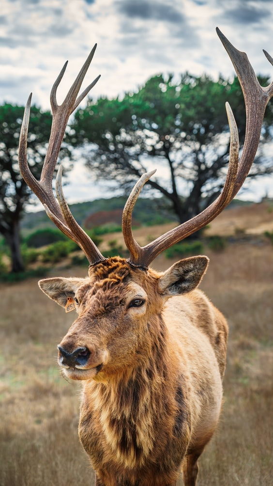
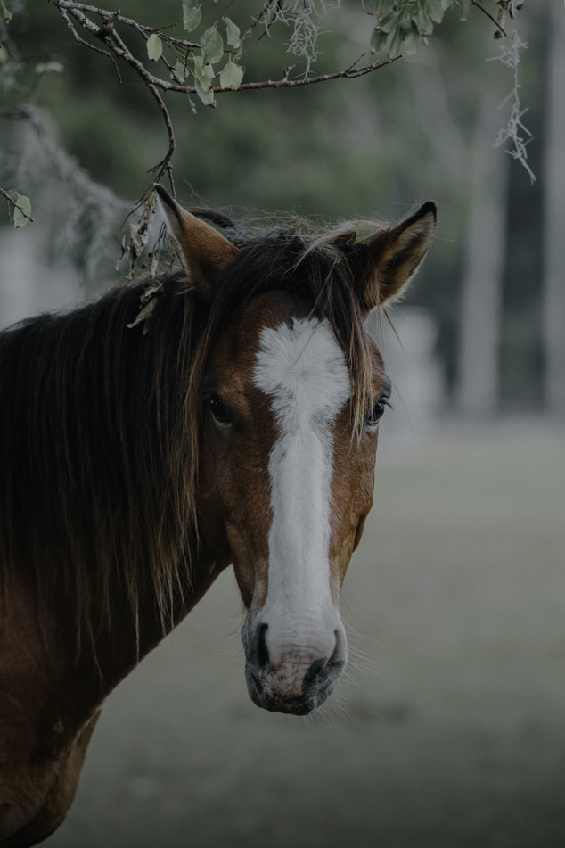
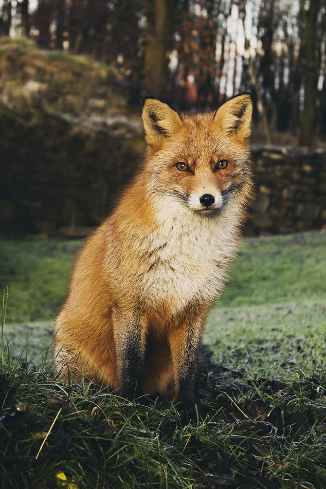
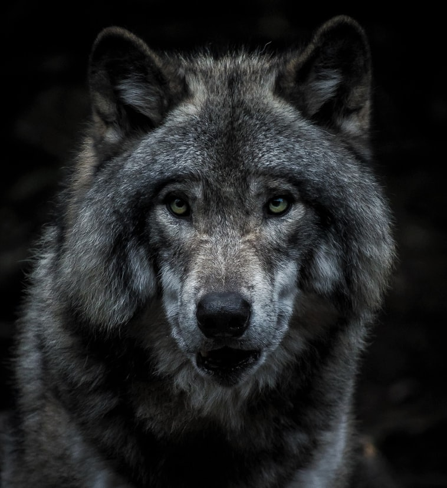
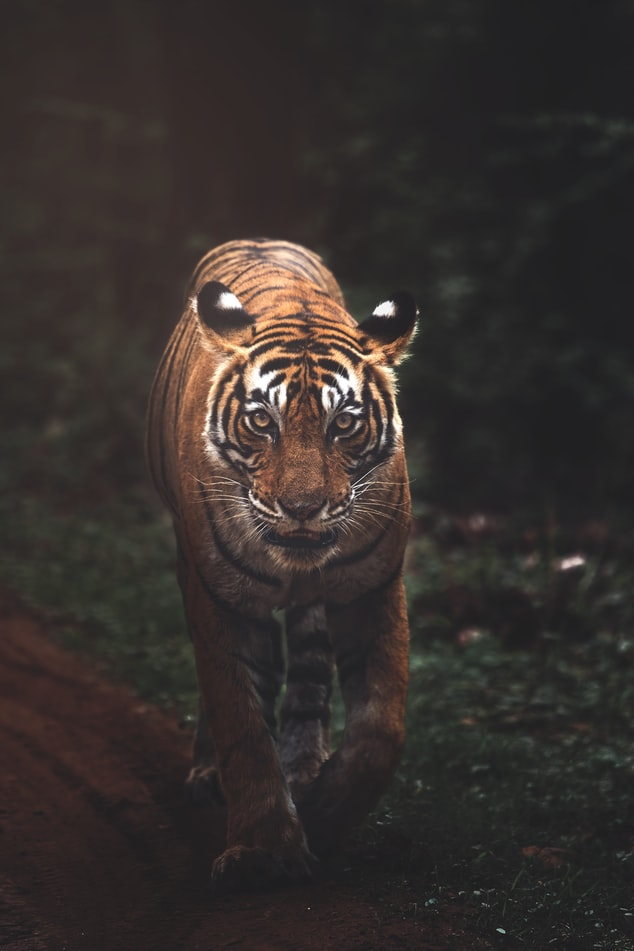
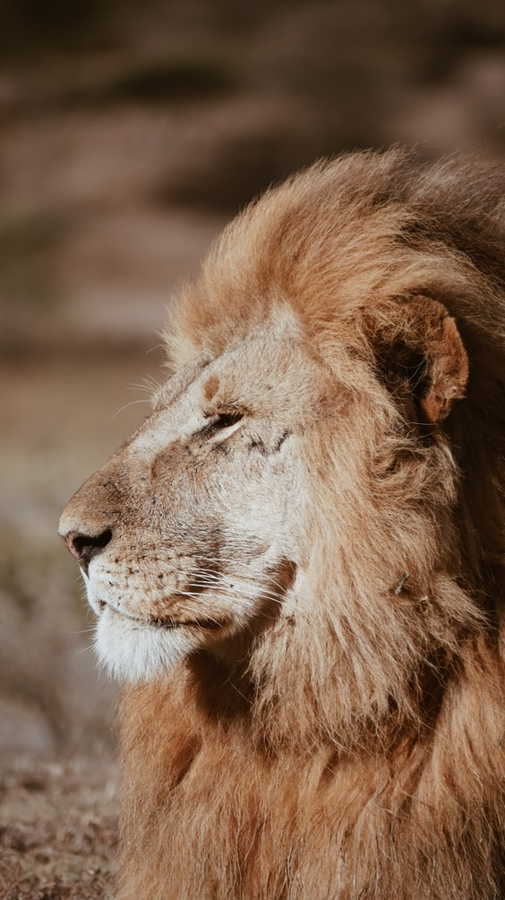

Animais Fantásticos
- 
- 
- 
- 
- 
- 
Cervo
Cervos são mamíferos herbívoros, pertencentes à Família Cervidae, mas distribuídos em vários Gêneros. Encontrados em todo o mundo, estes animais possuem como uma de suas características principais a presença de chifres, nos machos.
Predados pela maioria dos grandes mamíferos, muitas espécies de cervos se encontram ameaçados de extinção, em razão da caça e perda de hábitats.
No Brasil, encontramos oito espécies que, à primeira vista, parecem semelhantes. Isso se justifica pelo fato de as diferenças entre elas serem geralmente sutis, relacionadas ao tamanho do corpo e estruturas corporais e porque algumas dessas espécies vivem em ambientes similares.
A característica que distingue os indivíduos do Gênero Mazama dos outros é a ausência de ramificações nos chifres.
Cavalo
Os cavalos são animais mamíferos, logo, possuem seu corpo repleto de pelos. Os pelos desses animais variam muito, sendo possível observar indivíduos com pelos de tonalidade marrom-claro, marrom-escuro, preto, branco e com manchas.
Os cavalos são também muito pesados, um indivíduo de 1,50 m tem, aproximadamente, 400 quilos. Vale salientar que algumas raças podem apresentar valores impressionantes, podendo pesar até uma tonelada.
A gestação da égua dura em média 11 meses. Após nascerem, esses animais são alimentados pela mãe, sendo comum o aleitamento permanecer até os sete meses de vida.
O cavalo, sem dúvidas, foi um animal extremamente importante para o desenvolvimento do ser humano. Esse animal já foi muito usado no passado, e até mesmo nos dias atuais, para transporte, por exemplo. Além de transporte do ser humano, o cavalo é usado no transporte de cargas e no trabalho com o gado. Nos dias atuais, é muito usado também em: hipismo, adestramento, polo, salto, vaquejada e rodeio.
Raposa
As raposas (Vulpes vulpes) são mamíferos, carnívoros, pertencente à família Canidae. Este animal é uma das várias espécies do gênero Vulpes, gênero ao qual pertencem a maioria das espécies de raposa, embora algumas espécies pertençam a outros gêneros.
A raposa vermelha, como evidencia o nome, tem a pelagem vermelho-amarelada. Chega a medir 1m de comprimento, fora seu rabo que é espesso e longo (mede de 32 a 49cm), que geralmente tem a ponta branca. Alcança 40cm de altura, e pode pesar até 10 kg. Suas orelhas são grandes, mais escuras que o tom de sua pelagem por fora, e brancas por dentro. Os sentidos das raposas são muito apurados.
As raposas vermelhas são animais de hábitos crepusculares e noturnos. Alimentam-se preferencialmente de pequenos roedores, ovos e filhotes de aves, coelhos e eventualmente torna-se necrófaga, ou seja, alimenta-se de carne em decomposição. Frutas e grãos compõem sua alimentação no outono.
Lobo
Os lobos são mamíferos carnívoros, pertencentes à família canidae, a mesma de cães, raposas, etc. É parente bem próximo do cão doméstico (Canis lupus familiaris) e acredita-se que este tenha se originado através da domesticação de lobos cinzentos
Nas regiões mais frias (Norte) são maiores e nas regiões mais quentes (Sul) vão diminuindo. Machos pesam em média 50 kg e fêmeas 45 kg, apesar de haver registros de um lobo com mais de 70 kg na América do Norte. Um lobo-cinzento mede de 1,3 a 2,0 metros. As garras estão sempre expostas, diferente dos felinos, e podem alcançar 70 km/h quando caçam. Possuem glândulas odoríferas entre seus dedos, deixando sua marca para outros lobos, por onde passam.
Há um casal dominante e apenas ele se reproduz. São monogâmicos. A reprodução ocorre entre os meses de Janeiro e Abril, mas as populações do Norte podem começar mais tarde. As fêmeas entram no cio uma vez por ano e isso dura de 5 a 14 dias. Dão à luz em tipos de tocas, a gestação dura de 60 a 63 dias, com uma média de sete filhotes, podendo chegar a quatorze
Tigre
O tigre, Panthera tigris, é o maior felino encontrado no planeta. Estão classificados como mamíferos e carnívoros assim como os outros representantes do gênero Panthera, estão localizados pela Ásia, da Sibéria às ilhas de Bornéu e Sumatra, na Indonésia. Habitam geralmente as estepes geladas, florestas úmidas e bosques.
As principais características são: comprimento de 1,40 a 2,60 m (sem a cauda), a cauda pode ter mais de 1 metro, pesam entre 130-320 kg, cinco dedos em cada pata dianteira e quatro em cada pata traseira. A maioria deles caça a noite (são noturnos), enorme mandíbula, dentes grandes e afiados, andar macio e fortes garras. Possuem um excelente olfato, uma audição aguda, ótima capacidade de enxergar bem na escuridão e sobem com facilidade em árvores.
Na sua maioria, os membros selvagens têm pelo bege-escuro, na mesma tonalidade da cor das folhas mortas ou da rocha sem vegetação, que fazem parte do seu habitat e assim podem se esconder para atacar à presa
Leão
O leão (Panthera leo) é um mamífero da ordem dos carnívoros e da família Felidae, sendo o segundo maior felino (o tigre é o primeiro) do mundo. Os leões têm como marca característica a juba dos machos, que pode servir de proteção em brigas, ou para intimidar o adversário, parecendo maior
São animais que vivem em grupos constituídos por um macho alfa, várias fêmeas e jovens, que não alcançaram a maturidade sexual. São animais com atividades crepusculares e noturnas. As jubas costumam serem maiores nos leões que vivem em regiões abertas. Um macho pesa em torno de 180 Kg, mas há registros de animal com 270 Kg e medem por volta de 1,2 metros. As fêmeas em média pesam 120 Kg (podem alcançar 180 Kg) e medem 1,1 metros. O comprimento de um leão pode atingir 3,3 metros.
Vivem em grupos de até 40 indivíduos, no qual os machos cuidam da proteção e as fêmeas da caça e do cuidado com os filhotes. Alimentam-se de vários animais, como as zebras e os gnus. Caçam em grupo, formando emboscadas e apesar desta tática gerar maior sucesso na caça (30% das investidas), acaba que cada indivíduo se alimenta menos. Um leão precisa comer no mínimo 5 kg de carne diariamente, como nem sempre se alimentam, chegam a comer 30 kg de uma vez só, por garantia.
FAQ
- Eles são fantásticos?
- Sim, todos são incríveis e com características únicas.
- Como proteger?
- Busque sempre ONGs com boas intenções na sua região.
Contato

- alisson.xavier@
- +55 (33) 9999-9999
- Rua do Dezembro
- Viçosa - MG